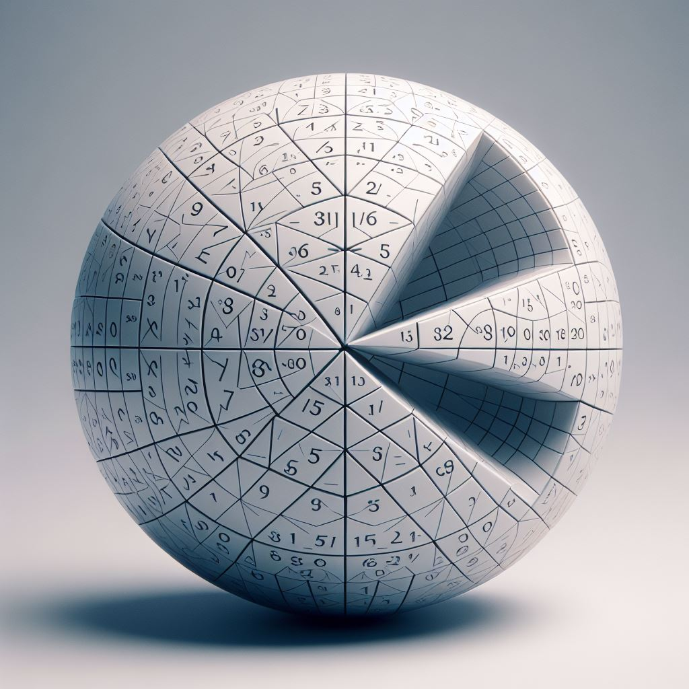

This website uses cookies to ensure you get the best experience on our website. Love it, or leave it.
How Accurate Are The Conventional Geometry Formulas?
Historically, Euclidean geometry has provided a framework for understanding and describing the physical world. It is based on axioms and postulates, leading to well-defined formulas for the calculation of areas and volumes of shapes such as circles and spheres.
The concept of setting the square and the cube as the basis of the area and the volume calculation is well established and straightforward. Regardless of the shape of the measured object, the unit of measurement of the area is square units and the volume can be expressed in cubic units.
In the case of the area of a triangle, it is an easy task because multiplying the base by the height gives a rectangle with an area exactly the double of the triangle. The square root of half of the area of the rectangle is the side length of the theoretical square that has the same area as the triangle.
In the case of the volume of a cuboid, it is a simple multiplication of the edges. The cubic root of the product of the edges is the edge length of the theoretical cube that has the same volume as the cuboid.
Other shapes are more challenging. The ratios are in the shapes; one just has to write them down algebraically.
The constant relationship between a circle's circumference and its diameter has captivated mathematicians for millennia.
While its approximate value of 3.14159…, commonly denoted by the Greek letter π, is widely recognized today, the historical development of this concept is less understood.
Ancient civilizations grappled with this geometric challenge, employing various methods to approximate this ratio.
The Babylonians initially estimated it as 3, later they calculated with 3.125.
A Greek mathematician is credited with refining these approximations through the method of inscribed and circumscribed polygons.
His approach was that the ratio between the perimeter and the diameter of a circle can be estimated by comparing the circumference of the circle to the perimeters of an inscribed and a circumscribed polygon.
The polygons can be divided into triangles. The ratio between the legs of the triangles and their hypotenuses can be measured linearly.
That is where the pi/delta=3.14 notation might originate from.
This method has several limitations. He tried to increase the accuracy by increasing the number of sides of the polygons. This approach cannot produce an accurate result.
The same coefficient was used to calculate the ratio between the squared radius and the area of a circle.
Despite these early advances, a precise, universally accepted value of this constant remained elusive for centuries.
With its value believed to be an infinite fraction, it seemed necessary to denote it by a sign in the equations.
It was not until the 18th century that the symbol π, popularized by the mathematicians of the time, gained widespread acceptance.
Several complex formulas were introduced by different mathematicians, aimed at more accurately estimating this ratio, based on a theoretical polygon with an infinite number of sides.
All of the comparison methods mentioned above have one thing in common. They are estimating the perimeters of polygons and do not account for the curved shape of the circle.
By focusing on area relationships and direct comparisons between shapes, the following method emphasizes a more intuitive and potentially more fundamental understanding of geometric concepts.
The area of a circle is defined by comparing it to a square since that is the base of area calculation.
The circle is cut to four quadrants, each placed with their origin on the vertices of a square.
In this arrangement the arcs of the quadrants of an inscribed circle would meet at the midpoints of the sides of the square.
The arcs of the quadrants of a circumscribed circle would meet at the center of the square.
The arcs of the quadrants that equal in area to the square intersect right in between these limits on its centerlines.
When the arcs of the quadrant circles intersect at the quarter of the centerline of the square, the uncovered area in the middle equals exactly the sum of the overlapping areas respectively.
Quarter of the uncovered area in the middle:
The area of an overlapping section:
The equation is calculable using a calculator, or it can be simplified algebraically.
Simplifying the original equation:
Simplifying further:
Substituting 90°/360° for 1/4:
Simplifying further:
Which is equivalent to:
1 = 1
The ratio between the ray of the circle and the side of the square can be calculated by using the Pythagorean theorem.
The area of both the square and the sum of the quadrants equals 16 right triangles with legs of a quarter and a half of the square's sides, and its hypotenuse equal to the radius of the circle.
The circumference of a circle is derived algebraically from its area by subtracting a theoretical circle with a ray shorter than the ray of the actual circle by the theoretical width of the circumference.
The x represents the width of the circumference, which is just theoretical, hence a very small number.
The difference between the shape of the straightened circumference and a quadrilateral is negligible.
The length of the two shorter sides of the quadrilateral is x.
The length of the two longer sides is the area of the resulting ring divided by x.
Expand the term
:
Substitute this back into the original expression:
Distribute the 3.2 inside the parentheses:
Simplify the numerator:
Factor out x from the numerator:
Cancel out the x in the numerator and denominator:
As x is close to 0,
In calculus terms:
The volume of a sphere is defined by comparing it to a cube, since that is the base of volume calculation.
Just as the volume of a cube equals the square root of its cross section cubed - -,
so is the volume of a sphere equal to the area of its cross section cubed.
The edge length of the cube, which has the same volume as the sphere, equals the square root of the area of the square that has the same area as the sphere's cross section.
Disapproval of the mathematical constant π
Using the same model, in which we were able to find a direct relationship between the radius of the circle and the side length of the square by ensuring that the overlaps equal the unfilled space,
and the radius of the circle equals
, I change the side length of the square to √π, assuming that the area of a circle equals πr².
The idea is that the area of the circle equals the area of the square. Looking for the ratio between the length of the side, I could denote the side of the square as 1, and compare the radius to that, or denote the radius as 1 and express the side compared to that.
I denoted the radius as 1 and the side as √π, because if the “A=πr²” formula was true, the side length of the square that has the same area as the circle was
.
I substitute 3.2 with π in the overlap/unfilled equations:
=
The equation holds true, meaning that the overlaps cancel out the unfilled area, so the area of the circle equals the area of the square with side=r√π.
But the square consists of 16 right triangles with legs of
and
and hypotenuse of
, which should equal the radius.
This means that the radius is shorter than it should logically be -one-.
That's a logical error in the "A=πr²" formula; not the model.
The π is a very rough approximation; 3.2 is an exact value.
Advertisement
Surface area of a sphere

The image is an illustration.
The formula of the surface area of a sphere is available for 3.2 billion USD. (+tax, if applies)